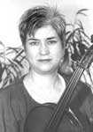

|  |
Violist Christine Rutledge has appeared as soloist, chamber musician, and orchestral musician throughout the United States and abroad. Her performances and recordings have been praised in such publications as “The Strad,” “Fanfare,” the “New York Times,” and “The New York Concert Review.” Her recordings with the Notre Dame String Trio include: “Chamber Works of
David Diamond for Strings and Piano” with pianist Ralph Votapek, and the Hindemith String Trios. Soon to be released is a solo disk of works by Clarke, Bliss, and Bridge for viola and piano with Ksenia Nosikova. Recent solo performances and master classes include those at International Viola Congresses in Bloomington, Indiana, Marchneukirchen, Germany, and Linköping,
Sweden; the University of Michigan; the Oberlin Conservatory; and the University of Kansas; and Bowling Green State University.
Rutledge’s repertoire spans major works from the standard repertory to lesser-known and obscure works for the viola, particularly those for viola in unusual combinations. She also performs many of her original transcriptions of Baroque compositions, including the Bach Cello Suites and sonatas for viola da gamba. Works composed for her include “Chimera” for
Viola and Harpsichord by C.P. First and “Nudged Along on Time’s Notched Stick” for Flute, Viola, and Guitar by Zae Munn, and a trio for flute, viola and guitar for her newly-formed ensemble, The New Opus Trio, by Jeremy Dale Roberts. A duo for viola and percussion is being written for her by Claude Baker with a the Center for New Music Commissioning Grant and will be
premiered in the 2002-03 concert season.
Currently Rutledge holds the position of Associate Professor of Viola at the University of Iowa, where she is Head of the String Area. She serves on the executive board of the American Viola Society, and is president of the Iowa Viola Society. For six years she served as Assistant Principal Viola of the Louisville Orchestra and violist of the Ceruti Chamber Players and the Kentucky Center Chamber Players. She has also been a member of the faculty at the University of Notre Dame. Festival appearances include the Sewanee Summer Music Center, “Brunch with Bach” series at the Detroit Institute of Art, the Manitou Music Festival, the Hot Springs Music Festival, and the Interlochen Center for the Arts. She is currently a member of the Fontana Chamber Arts Festival ensemble.
Rutledge is a graduate of the Curtis Institute of Music as a student of Karen Tuttle and Michael Tree, and the University of Iowa with William Preucil, Sr. She is also a graduate of the Interlochen Arts Academy, where she was honored as Valedictorian and recipient of a Young Artist Award. Among her many honors are Prizewinner in the Aspen Festival Viola Competition, an Indiana Arts Commission Individual Artist’s Fellowship, recipient of an Eli Lilly Foundation grant for undergraduate teaching development, as well as several awards from the Institute for Scholarship in the Liberal Arts at the University of Notre Dame. Most recently she was awarded a major grant from the Arts and Humanities Initiative at the University of Iowa. |